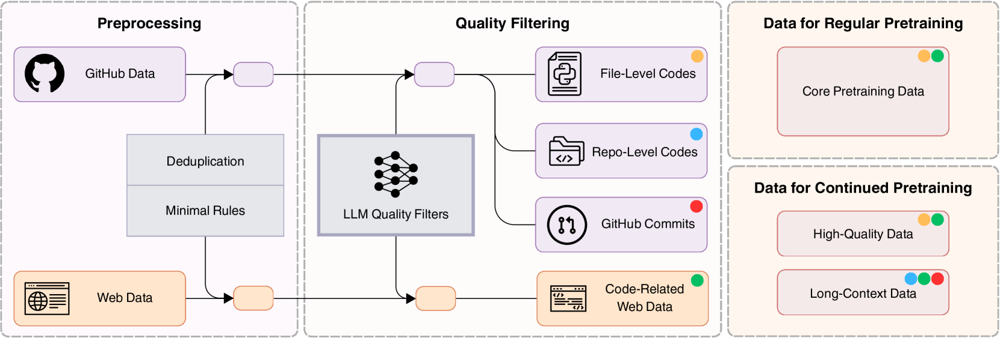
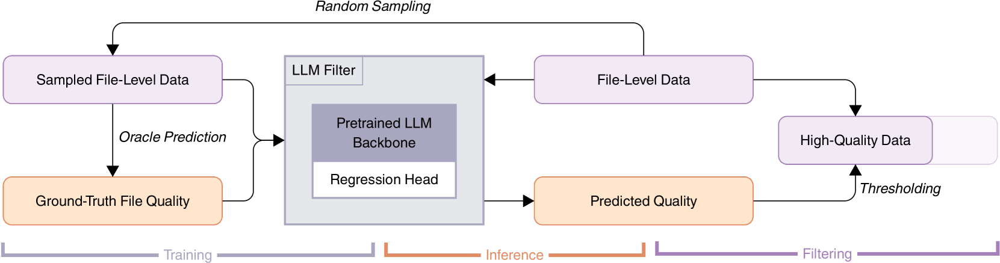
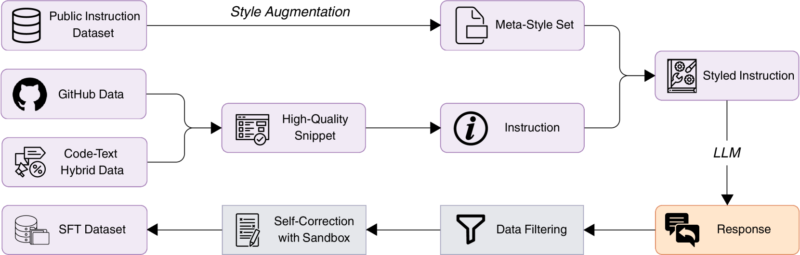

让代码模型，为自己挑训练数据
现有开源代码模型的数据清洗，高度依赖人手写的过滤规则。Seed-Coder 反过来问：既然这些模型本身就是优秀的程序员，为什么不让模型来评判代码质量、为自己筛选训练数据？由此造出一个「以模型为中心」的数据管线，并训出 8B 的 base / instruct / reasoning 三件套。
TL;DR
代码数据不只帮模型写代码，还能提升通用智能。但开源界清洗代码数据时严重依赖人工——手写一堆按语言定制的过滤规则，或用人工标注去训质量分类器。这类做法难扩展、有主观偏见、跨语言维护成本高。
Seed-Coder 提出一条「以模型为中心」（model-centric）的数据管线：用 LLM 而不是手写规则来给代码打分与过滤，几乎不需要人介入。基于此清洗出的 6 万亿 token 语料，训练出 8B 的 base / instruct / reasoning 三个模型，在同量级开源模型里全面 SOTA，甚至超过一些大得多的模型。
几乎全靠模型筛选
/ reasoning 三件套
覆盖的编程语言
在预处理阶段被裁掉
01清洗代码数据，为什么不能总靠人？
顶尖闭源模型（Claude 3.7 Sonnet、OpenAI o3）几乎不公开训练数据；开源模型（DeepSeek-Coder、Qwen2.5-Coder）虽给了思路，但数据处理大多一笔带过。它们的共识是：靠人类专家手工 curate 数据是提升代码质量最直观有效的办法。
问题在于：手写规则彼此会打架，而且要在几十上百种语言间扩展、维护，成本极高；更糟的是，规则天然带着主观偏见、缺乏可扩展性。作者把这件事和那篇被反复引用的《The Bitter Lesson》联系起来——
"AI researchers often favor human-centric methods due to their short-term advantages, yet these approaches inevitably plateau ... the breakthrough progress eventually arrives by the opposing approach via scaling computation and data."
📌 苦涩的教训：以人为中心的方法短期省事，长期必然撞上天花板；真正的突破来自「放大算力与数据」的相反路线。代码领域尤其容易掉进这个坑——因为 AI 研究者大多自己就是熟练程序员，觉得「我看一眼就知道代码好不好」，于是更倾向手工定规则。
一个反例：人类和规则都容易看走眼
论文举了个具体例子（Figure 3）：下面这段 Python 结构工整、注释完整、命名规范——按启发式规则它该是「高质量」。但它藏着逻辑错误：第一个条件 temp < 0 and temp > 1 永远不可能成立。要发现它，必须真正读懂整段代码的语义，而这恰恰是规则和粗看难以胜任的。
def main(temp): """根据温度区间打印对应描述（Freezing / Very Cold / ...）""" if temp < 0 and temp > 1: # 永远为假：逻辑 bug print("Freezing") if temp > 0 and temp < 11: print("Very Cold") if temp > 10 and temp < 21: print("Cold") # ... 其余区间类似 ... return
作者结论：要充分判断一份代码的好坏，需要理解它的完整上下文——这是一个「穷举且本质上不可扩展」的任务，不该交给人和规则，而应该交给会读代码的 LLM。
02主流做法：手写规则 + 人工标注的质量过滤器
在 Seed-Coder 之前，开源代码模型的数据清洗基本是「人类中心」（human-centric）的两条路线。它们都有效，但都把人力放在了瓶颈上。
怎么做：DeepSeek-Coder / DeepSeek-Coder-V2 沿用 StarCoder 的过滤规则作为数据处理第一步；Qwen2.5-Coder 用类似的一套规则法。
卡在哪：规则只能表达「可被精确定义」的标准，难以纳入经验性的启发；调节过滤强度不灵活；更根本的是，规则的制定依赖专家共识，而共识常常并不存在。比如「带大量注释的类模板」——有人觉得帮助理解，有人觉得稀释了代码含量，两派都有道理，规则该信谁？
怎么做：OpenCoder 在预训练数据管线里塞进了 130+ 条手工过滤规则，每条带自定义权重。
卡在哪：规则越多越容易互相冲突，跨语言扩展和维护的成本随之爆炸。这正是「人类中心」路线的天花板——短期精细，长期失控。
怎么做：用人工标注的「好/坏代码」数据训练一个分类器，再拿它去过滤大规模语料。
卡在哪：人工标注难以覆盖数十亿样本，跨语言重复标注成本极高；标注的主观偏见会被分类器继承放大。归根结底还是把人力放在了无法 scale 的环节上。
三条路线的共同症结：把人当成质量判断的核心。Seed-Coder 的回答是——让 LLM 接管这件事。LLM 能捕捉「难以显式量化」的质量直觉，又能对数十亿样本做一致、可扩展、自包含的评估。
03以模型为中心的数据管线
整条管线的输入是从 GitHub 和网页存档爬来的原始代码数据，输出是最终的预训练语料。核心思想贯穿始终：预处理只做最少的事，真正的质量判断交给 LLM 过滤器。下面这张是全文最重要的总览图。

- 左侧 · 预处理（Preprocessing）：对 GitHub 数据与网页数据先做去重（精确去重 + 近似去重）和最小规则（语言识别、语法检查等），只剔除明显无关/非代码内容，不做激进清洗。GitHub 数据这一步就裁掉了约 98% 的原始体量。
- 中间 · 质量过滤（Quality Filtering）：核心是那个画成「神经网络」图标的 LLM Quality Filters——用 LLM 给代码打分、筛掉低质内容。这是「让模型自筛数据」的心脏。
- 四类产出（中右）：过滤后的数据分成四类，并用颜色标注——文件级代码（黄）、仓库级代码（蓝）、GitHub Commits（红）、代码相关网页（绿）。
- 右侧 · 两阶段配方：上方「常规预训练」只用文件级代码 + 网页数据（图中黄+绿圆点）搭建基础能力；下方「继续预训练」扩展到全部四类，并额外加入高质量数据与长上下文数据做增强与对齐。
- 解耦设计：所有预处理与过滤模块都被拆开，可各自独立运行，无需为增量数据重跑整条管线——这让管线既省算力又灵活。
跟着管线走一遍
下面这个分步演示对应上图的主干，点「下一步」看一份原始代码如何被一路筛成预训练语料：
核心机件：一个会打分的 LLM 质量过滤器
怎么把「让模型评判质量」落地成能处理数十亿样本的工程？答案是训一个文件级打分模型，一次性筛掉低质代码，省去逐条编造复杂标准。下图是它的构造与使用流程。

- 训练（Training，左）：从常用语言里随机采样代码文件（Sampled File-Level Data），交给一个强 LLM「裁判」（oracle，实际用 DeepSeek-V2-Chat）打分，得到「Ground-Truth File Quality」。这些分数用来训练中间的 LLM Filter。
- 裁判模型（中）：在一个预训练 LLM backbone（1.3B，Llama 2 结构）上接一个回归头（Regression Head）。选回归而非二分类，是为了给出细粒度分数、避免规则式「一刀切」的僵硬。
- 推理（Inference，中右）：训好的打分器对全量 File-Level Data 逐个预测出「Predicted Quality」分数（已缩放到 0–1）。
- 过滤（Filtering，右）：按阈值（Thresholding）筛掉分数最低的约 10% 文件，留下「High-Quality Data」。这样在质量与多样性之间取得平衡，最终得到约 1T unique token、覆盖 89 种语言的高质量代码。
- 顶部回路（Random Sampling）：训练用的样本正是从全量 File-Level Data 随机采样而来——形成「采样 → 裁判打标 → 训练打分器 → 回头过滤全量」的闭环。
裁判被要求从四个维度评估代码，给出 0–10 的总分（外加解释，但只取分数当标签）：
此外还设了「零分政策」：纯配置/纯数据文件、几乎没有有效逻辑的代码、以及带「generated by Django」之类标记的自动生成代码，直接判 0 分剔除。完整 prompt 见原文附录 A.2.1。
四类数据，各取所长
经过 LLM 过滤后的数据被组织成四类，覆盖从单文件到整个项目、从代码演化到自然语言上下文：
- 文件级代码：GitHub 上的单个代码文件，适合短上下文训练。
- 仓库级代码：按仓库结构组织文件，保留项目结构，支持更连贯的长上下文学习（主流语言按文件依赖做拓扑拼接）。
- Commits 数据：GitHub 提交快照（提交信息、仓库元数据、相关文件、代码补丁），格式化为「代码变更预测」任务——给定提交信息与上下文，预测被改文件路径与代码改动。
- 代码相关网页：从 Common Crawl 抽取含代码块或高度代码相关的文档，约 1.2 万亿 token。
网页 & Commits & 长上下文：更多数据来源细节 · FastText 召回、类目去偏、32K 长上下文（点开看细节）
代码相关网页（Common Crawl）：先做文本抽取，区分「显式 code 标签（如 <code>）」与「非显式」两类；后者量大难抽，于是用 10M 候选页训练一个 fastText 召回模型，在验证集上召回 99% / 精度 45%，从 Common Crawl 中识别出约 3% 为代码相关。再用 LLM 打分（0–10）过滤。作者发现打分有类目偏见——电商/文档站因格式规整得分偏高，论坛/社区讨论虽有价值却偏低；于是按类目分别设阈值与采样率，避免某类内容被过度代表。最终约 1.2T token。
GitHub Commits：从高星、活跃维护的高质量仓库收集提交（按 stars / forks / commits / 维护天数等门槛筛选），每条含提交信息、补丁、合并状态、提交前快照；上下文取 README、目录结构与 BM25 召回的 top-5 相关文件，提供真实世界「代码如何演化」的密集监督。
继续预训练的高质量数据：把质量分数与迭代训练的 fastText 结合。从多源各取约 100K 的高质量种子作正样本，再配上随机负样本与精心构造的难负样本（如分数高但没注释、或一轮召回但打分低的样本）；迭代 2–3 轮扩充种子，最终得到约 130 亿 token 高质量数据。
长上下文数据：在继续预训练阶段把上下文从 8K 逐步扩到 32K，用约 1 万亿 token；仓库级数据按文件依赖做拓扑拼接，超大仓库（如 PyTorch）拆成多个子图避免序列过长。
FIM（填空式训练）：在 next-token 之外加入 Fill-in-the-Middle。作者发现 SPM 模式略优于更常用的 PSM，推测与注意力的位置偏置有关：SPM 下「后缀开头」与「前缀结尾」分处序列两端，二者对预测中间内容都很关键。
预训练配置与配方 · Llama 3 结构、8.2B、6T tokens 的训练曲线（点开看细节）
架构：沿用 Llama 3 结构，8.2B 参数、36 层，采用分组查询注意力（GQA，32 个 query 头 / 8 个 KV 头），不绑定词嵌入。常规预训练上下文 8K，继续预训练扩到 32K。
配方：总共消耗 6 万亿 token。先用代码相关 + 数学相关网页训练前 1T token；再用 curated 代码数据训练 4T token；继续预训练阶段切到高质量与长上下文数据，学习率先降一档训 400B token，再降一档训 600B token。
04Instruct 与 Reasoning：同样让模型造数据
「模型为中心」的思路一路延续到后训练：instruct 模型靠 SFT + DPO，其训练数据大量由 LLM 合成并过滤；reasoning 模型靠 LongCoT 强化学习提升多步代码推理。
Instruct 模型：合成 → 过滤 → 自我纠错
SFT 数据集约 300 万条指令-响应对，构建时盯住三件事：多样性、质量、难度。下图是这条 SFT 数据 curation 流水线。

- 种子来源（左）：从 curated GitHub 数据与代码-文本混合数据（Markdown、Jupyter、StackExchange）里提取「High-Quality Snippet」，转成初始的「Instruction」。
- 风格增强（上）：从公开指令数据收集多样风格构成「Meta-Style Set」，随机挑两种风格混合出新风格——因为合成指令往往太「规整」，真实用户的提问却随意多变。
- LLM 合成（右）：把指令重写成随机选中的风格（Styled Instruction），再由 LLM 生成对应「Response」。这样指令与回答都贴近真实开发者的写法与问法。
- 数据过滤（下右）：用规则（Tree-sitter 查语法错误）+ 模型（按正确性打分）过滤低质回答；再按难度过滤——先打标签分类，再让模型评难度，难度低于 3/10 的直接丢弃。
- 沙箱自我纠错（下中）：难题往往出错率高、容易被质量过滤误杀。于是让模型自己生成解法 + 单元测试，在沙箱里跑，失败就迭代修正直到通过——把更多高难度样本「救」回 SFT 集。
SFT 训练 3 个 epoch，并用难度感知采样优先喂难题；之后用 DPO：对挑选出的任务采样大量候选回答，在沙箱里用单测评判，构造偏好对进一步打磨代码生成与推理能力。
Reasoning 模型：从 base 起步的 LongCoT 强化学习
为探索 8B 模型的上限，作者做了 LongCoT 强化学习：先 warmup（少量蒸馏的长思维链），再 GRPO 强化学习。一个反直觉的关键选择——
保留模型自己的探索空间
- instruct 模型 warmup 后分数虽更高，但 RL 中容易塌缩回 SFT 训练数据的套路，反而拖垮 RL 后表现。
- warmup 只用少量蒸馏数据（来自 DeepSeek-R1 在 CodeContests/ICPC 上、经沙箱拒绝采样保留的正确解），鼓励学到多样思维模式，把自我提升留给 RL。
课程学习 + 渐进式探索
- 用 verl 框架做 GRPO，借鉴 DAPO 的优化技巧：batch 128、温度 0.6、去掉 KL loss、clip 比设到 0.28、token 级 loss。
- 过滤过于简单的问题（正确率过高的），逼模型更高效地用思维 token。
- 渐进式：先 90 步用 16K 序列 / 每题 16 个采样，再 160 步用 32K / 32 个采样，共 250 步——显著提升早期训练效率。
去污染（Decontamination） · 10-gram 过滤，防止测试集泄漏（点开看细节）
为确保训练数据没被测试集污染，作者对全部预训练与后训练数据做了去污染：采用广泛使用的 10-gram 过滤，移除与 HumanEval、MBPP、MHPP、BigCodeBench、LiveCodeBench、Aider、FullStack Bench 等关键基准有任意 10-gram 词重叠的数据。
05几个值得记住的设计取舍
① 把「苦涩的教训」用在数据清洗上
大多数 scaling 讨论针对模型与算力，Seed-Coder 把同一哲学搬到了数据 curation：与其让程序员专家手工定规则（短期有效、长期撞墙），不如让 LLM 来做可扩展的质量判断。这是整篇论文的「北极星」。
② 回归打分器，而不是二分类
质量过滤器特意做成回归（0–1 连续分）而非「通过/淘汰」的二分类——这样可以灵活选阈值、在不同分数区间都给出可信预测，避免规则式一刀切的僵硬。附录里作者还比较了三个 oracle（GPT-4 Turbo、DeepSeek-Coder-33B、DeepSeek-V2-Chat），发现打分高度一致，最终选了效率与准确性平衡的 DeepSeek-V2-Chat。
③ 网页打分的「类目偏见」要主动纠
一个容易被忽视的细节：LLM 给网页代码打分时，格式规整的电商/文档站天然占便宜，论坛/社区讨论吃亏——但后者常含真知灼见。作者没有放任分数，而是按类目分别调阈值与采样率，保住数据的代表性与多样性。让模型筛数据，也要警惕模型自己的偏见。
06小模型，硬实力
一句话概括：用「模型自筛」的 6T token 语料，8B 的 Seed-Coder 在同量级开源模型里全面领先，并多次越级击败更大的模型。下面挑几个代表性结果。
越级胜 236B 的 DS-Coder-V2
超 Qwen2.5-Coder-14B
略胜 Claude-3.7-Sonnet-Thinking
32K 上下文压力测试
三个模型，各自的成绩单
- Base：在 HumanEval(+)、MBPP(+)、MultiPL-E（8 种语言中 7 种领先）、CRUXEval 等基准上，同量级开源模型里 SOTA，部分指标超过 13B+ 的更大模型；「Needle in the Code」32K 长上下文压力测试达 100% 准确率。
- Instruct：MHPP 拿下 36.2%（大幅超所有 ~8B，甚至超 236B 的 DeepSeek-Coder-V2-Instruct）；BigCodeBench 完整集 53.3%/难集 26.4%；LiveCodeBench 24.7%（超 Qwen2.5-Coder-14B）；MBXP 多语言平均 75.3%；NaturalCodeBench 总分 49.6%（高于 14B 的 46.4%）；SWE-bench Verified / Multi-SWE-bench 在 ~8B 中最强。
- Reasoning：仅用 warmup 蒸馏的版本在 LiveCodeBench 已达 39.0%；经 RL 后再提升 +14.6 分到 53.6%，超过 14B 的 DeepSeek-R1-Distill-Qwen-14B，略胜 Claude-3.7-Sonnet-Thinking；Codeforces 1553 分（接近 o1-mini），IOI 上高于 QwQ-32B 与 671B 的 DeepSeek-R1。
"with minimal human effort, LLMs can effectively curate training data by themselves to significantly enhance code intelligence and reasoning capabilities."
只需极少人力，LLM 就能有效地为自己 curate 训练数据，从而显著增强代码智能与推理能力——这正是 Seed-Coder 想证明的核心命题。
局限与展望（作者自述）
- 通用能力受限：训练几乎只用代码，刻意排除了通用网页数据，因此自然语言理解与处理更广任务的能力有限。
- token 量差距：仅用 6T token 预训练（对比 Qwen3 的 36T），通用知识与数学数据不足，带来固有的理解约束。
- 仍是起点：作者把这次发布视为一个模型家族的开端，后续会在更多尺寸上继续提升代码能力。
一句话总结：Seed-Coder 把「数据清洗」从人力密集的手工活，重构成由模型驱动、可扩展的自动化流程——让会读代码的 LLM 给代码打分、为自己筛数据。结果证明：一个被「好数据」喂养的 8B 小模型，足以在代码生成、补全、编辑、推理与软件工程任务上越级而战。